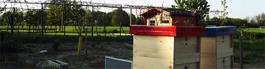

Winston Flower IranBest Flower Shop in Iran |
|
About UsIn 1944, Robert Winston and his teenage son, Maynard, first wheeled their pushcart of flowers onto Boston’s fashionable Newbury Street in front of the original Ritz-Carlton hotel. From those modest beginnings, Winston Flowers was born. With a focus on excellence in both product and service, the father-son duo made a name for the company as a forward-looking Newbury Street boutique with the most talented floral designers available. Acting on a tip from a Dutch employee, the company was one of the first florists in the U.S. to begin importing flowers directly from overseas. Bostonians were thrilled with exotic new varieties of freesias, lilacs, and tulips flown in from Holland exclusively for Winston Flowers. Today, the third-generation, family-owned company is run by Maynard’s sons, David and Ted Winston. It is one of the nation’s most highly regarded florists, with a worldwide online presence, four shops throughout New England—including the original Newbury Street store—and design studios in Boston and New York City. With 75 years of experience and a reputation for excellence, Winston Flowers provides best-in-class products and service to clients in Boston, Greenwich, New York City, and beyond. Iran BranchOur Branch is in Saadat Abad, Tehran (Capitial City of Iran) which is the best flower shop in this country. We have used a lot of Persian flowers too, and beacuse of the opening, we have 25% discount!! |
|
|
All Rights Reserved © 2021 By Mani Tanzzzz |
|